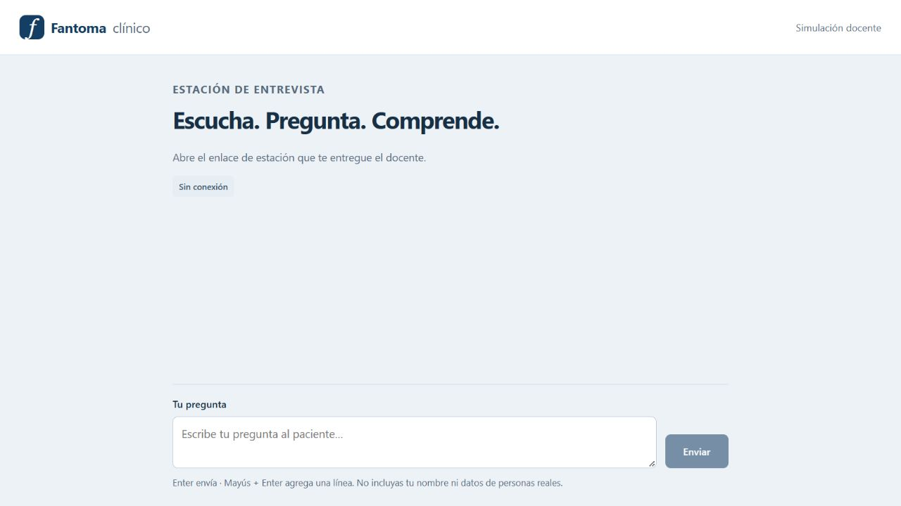
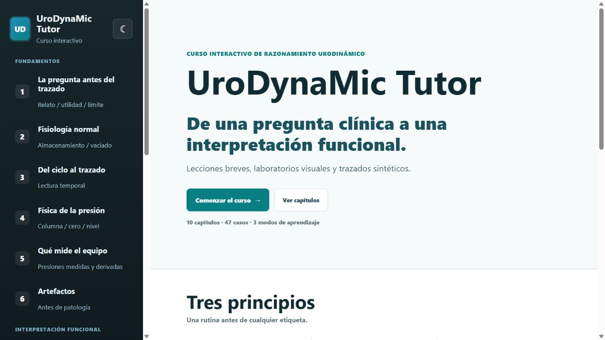
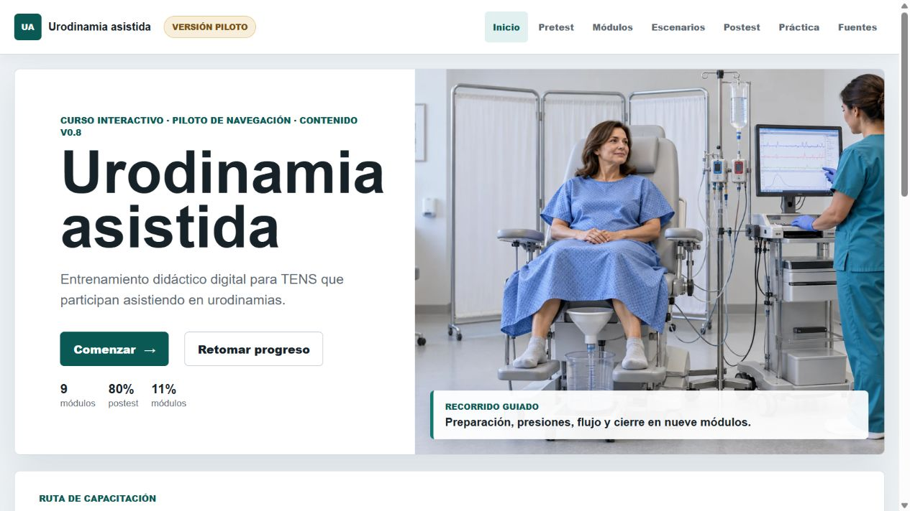

01PROTOTIPO LOCAL · WEB PERMANENTE PENDIENTE
Fantoma Clínico
Un paciente virtual para practicar la entrevista clínica bajo conducción docente.

Interfaz del alumno antes de abrir una estación. Captura local del 13/10/2026; sin entrevista activa.
Para docentes, centros de simulación y programas que necesitan ensayar la conversación clínica con un personaje consistente.
El QR abre el muestrario. La entrevista web permanente aún no está habilitada; requiere alojamiento y motor de IA.
Características y alcance
- Banco y búsquedaCatálogo de once personajes, búsqueda por paciente o caso y filtro de candidatos vinculables a Tutor. El banco se mantiene fuera del material público.
- Preparación docenteFicha, vacíos del caso y previsualización de la información que recibirá el modelo. La estación requiere revisión docente explícita.
- Dos vistasEl docente ve la preparación y los controles; el alumno recibe la consigna y el intercambio con el paciente, sin la ficha docente.
- Respuesta en personajeInstrucciones para lenguaje cotidiano, conservar el rol y expresar incertidumbre sin aludir a bases de datos ni inventar información faltante.
- Control de la estaciónIniciar, pausar, reanudar y finalizar. Abrir otra estación cierra la anterior y descarta respuestas que sigan en curso.
- Revisión posteriorExportación manual de mensajes completados e incidencias en JSON. El docente conduce la devolución; no hay calificación automática.
- Sesiones independientesUna estación activa por vez. Hasta 50 estaciones y 30 preguntas por estación en memoria; reiniciar elimina registros y revoca enlaces.
- Motor actual y evoluciónLa versión local utiliza LM Studio. Voz integrada, varios alumnos en red, rúbricas, estudios dinámicos y conexión con Tutor están pendientes.
Estado. Puede mostrarse la interfaz local y ensayarse una entrevista con el motor disponible. El despliegue permanente solicitado necesita un motor de IA accesible por internet y controles de acceso propios.
Límite. Uso docente. No demuestra fidelidad clínica, equivalencia entre alumnos ni competencia profesional. La calidad de las respuestas requiere revisión supervisada; las pruebas técnicas no equivalen a validación clínica.
Fuente: README y código de Fantoma Clínico, revisión 15/10/2026. Captura: 13/10/2026.
02CURSO INTERACTIVO · PILOTO WEB PÚBLICO
UroDynaMic Tutor
Aprender a razonar un estudio urodinámico, desde la pregunta clínica hasta los límites de la interpretación.

Portada de la versión publicada, comprobada el 15/10/2026. Los trazados del curso son sintéticos.
Para becados de urología, urólogos y docentes que buscan una entrada visual y progresiva al razonamiento urodinámico.
Acceso público desde el navegador, sin instalación. El enlace conduce a la versión publicada, que puede diferir del desarrollo local.
Características y alcance
- Fundamentos en seis capítulosPregunta clínica, fisiología normal, ciclo y trazado, física de la presión, medición del equipo y artefactos.
- Interpretación y neuro-urologíaCapítulos de almacenamiento, vaciado, coordinación detrusor-salida y razonamiento según el sitio de la lesión.
- Ruta por capítuloLección, Laboratorio, Preguntas y Práctica. Pantallas breves, preguntas guía y navegación progresiva entre actividades.
- Laboratorios visualesComparación de señales y patrones, controles de conceptos físicos y exploración temporal de eventos. Enfoque en calidad antes de interpretar.
- Práctica con trazados sintéticosCuarenta y siete casos educativos básicos e intermedios. Inspector, preguntas con retroalimentación y controles para reiniciar respuestas.
- Una rutina explícitaPregunta, fase, calidad, señal, evento, inferencia, límite y respuesta. Busca hacer visible cómo se construye una conclusión proporcional.
- Evaluación del razonamientoPretest, postest y caso integrador; seguimiento de competencias y progreso guardado en el navegador. La revisión humana sigue siendo necesaria.
- Recursos y accesibilidadVisión clínica, caso interactivo inicial, modo claro/oscuro y apoyo textual a señales y trazados. No depende exclusivamente del color.
Estado. Piloto público navegable. Puede presentarse a programas de formación para revisar contenido y usabilidad. La institucionalización requiere revisión científica y acuerdo de implementación.
Límite. Curso educativo: no analiza estudios reales, no entrega diagnósticos ni tratamiento, y no produce un informe clínico validado. Completar actividades no acredita competencia clínica observada.
Fuentes: curso publicado y README canónico; revisión de interfaz y funciones el 15/10/2026.
03FORMACIÓN DE AYUDANTES · PILOTO V0.8
Urodinamia asistida para TENS
Un recorrido digital para preparar, reconocer y asistir en cada etapa del estudio, con supervisión profesional.

Interfaz del piloto publicado, comprobada el 15/10/2026. Imagen ilustrativa de sala; no documenta un procedimiento real.
Para TENS y técnicos ayudantes, y para unidades que necesitan organizar una capacitación con roles y límites explícitos.
Piloto público en navegador. El progreso se conserva en ese navegador; no constituye un registro institucional de competencias.
Características y alcance
- Inicio y conceptos técnicosMódulos 1 a 3: qué es la urodinamia, qué mide el equipo y preparación de sala, equipo y materiales.
- Preparación del procedimientoMódulos 4 a 6: uroflujometría libre, residuo y traslado del uroflujómetro, asistencia en instalación y fijación.
- Registro y cierreMódulos 7 a 9: posición, conexión, nivelación y cero; asistencia al llenado; registro del vaciado y cierre del estudio.
- Pretest y evaluación formativaLínea de base, preguntas por módulo y continuidad del avance. Los módulos están disponibles para consulta con una secuencia recomendada.
- Escenarios técnicosActividades orientadas a reconocer problemas, comunicar y escalar al profesional responsable, dentro del alcance del ayudante.
- Postest con preguntas críticasUmbral interno de 80% junto con criterios críticos independientes. Aprobar conocimiento teórico no equivale a demostrar una habilidad práctica.
- Práctica supervisadaChecklist y ruta de observación por un supervisor. La práctica, la firma y la autorización institucional son etapas distintas de completar la web.
- Roles y recursosMatriz para TENS, profesional responsable y docente/supervisor; fuentes técnicas y ayudas visuales. Su aplicación depende del protocolo local.
Estado. Piloto público para demostrar navegación y revisar comprensión. Antes de uso institucional deben acordarse higiene, criterios de suspensión, manual del equipo y protocolo local.
Límite. No autoriza maniobras invasivas autónomas, interpretación de curvas ni diagnóstico. La plataforma no verifica identidad ni certifica competencia práctica o habilitación institucional.
Fuentes: piloto publicado, índice y README de Urodinamia asistida para TENS; revisión 15/10/2026.
04CONCEPTO DE PRODUCTO · SIN DEMO OPERATIVA
Neo Clínico
Un asistente de IA que organiza la información y prepara borradores, mientras el médico conserva la decisión.
Información aportada→Borrador revisable→Decisión médica
Esquema conceptual. No representa una pantalla implementada ni una integración clínica disponible.
Concepto dirigido a médicos y equipos interesados en apoyo documental supervisado. En este portafolio se presenta sólo la idea de producto.
El QR abre la ficha conceptual. No inicia una consulta, no ofrece una aplicación clínica y no permite cargar información de pacientes.
Características y alcance
- Organización de la informaciónConcepto: ordenar notas o transcripciones aportadas por el médico y conservar la relación con su fuente, sin completar silenciosamente vacíos.
- Hechos y razonamiento separadosConcepto: distinguir lo referido, observado, medido y documentado de inferencias, hipótesis, alternativas y pendientes de revisión.
- Borradores revisablesConcepto: preparar resúmenes e informes provisionales con campos y dudas visibles, para revisión, corrección y aprobación del médico.
- Control de la participaciónPrincipio: el médico conduce. Una futura interfaz de voz debe permanecer silenciosa hasta recibir una invocación y permitir detener la respuesta.
- Apoyo a evidencia y educaciónConcepto: ayudar a organizar revisiones de evidencia y explicaciones para el paciente, con fuentes y aprobación del profesional.
- Desidentificación desde el inicioPrincipio: usar códigos de caso y minimizar datos identificables. No se promete anonimización irreversible ni protección técnica no verificada.
- Interoperabilidad por definirUna futura conexión con registros, sistemas institucionales o motores de IA requiere acuerdos técnicos y autorización; no se presenta como instalada.
- Desarrollo por validarHay documentación y prototipos técnicos separados. No se presentan como una plataforma unificada, validada ni lista para atención clínica.
Estado. Material para conversar sobre necesidades y un eventual piloto de desarrollo. Alcance funcional, proveedor de IA, alojamiento, gobernanza, costo y métricas deben definirse antes de ofrecer una implementación.
Límite. No sustituye juicio clínico, no decide diagnósticos ni tratamientos, no firma y no actúa ante terceros de forma autónoma. Esta ficha no ofrece disponibilidad, seguridad certificada ni resultados clínicos demostrados.
Fuentes: constitución y README de Neo; inventario técnico 11/10/2026. Alcance conceptual indicado por Javier el 15/10/2026.